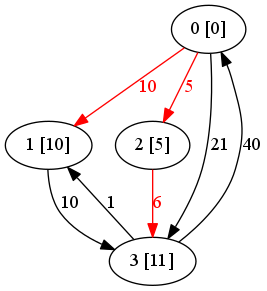
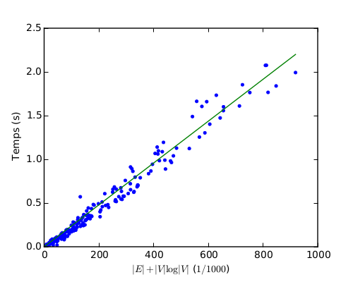
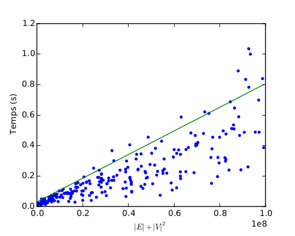

Algorithme de Dijkstra avec tas de Fibonacci
Jeudi 8 janvier 2015
Corentin Cadiou, Lucas Verney
Sommaire
Algorithme de Dijkstra

Wikipedia
Tas de Fibonacci
Implémentation
Dijkstra
function Dijkstra(G, v, s)
ds[s] ← 0
v.seen = True
for all arc a sortant de s do
longueur ← ds[s] + wa
P.insert(a, longueur)
end for
while P.not_empty() do
(u, v), poids ← P.extract_min()
if not v.seen then
s(v) ← poids
v.seen = True
for all arc a sortant de v do
longueur ← ds[u] + wa
P.insert(a, longueur)
end for
end if
end while
end functionTas de Fibonacci
typedef struct fibonacci_heap_element {
struct fibonacci_heap_element *parent;
struct fibonacci_heap_element *child;
struct fibonacci_heap_element *left;
struct fibonacci_heap_element *right;
int degree;
float key;
/* Decoration */
int from;
int to;
} fibonacci_heap_element_t;
typedef struct fibonacci_heap {
int nb_nodes;
fibonacci_heap_element_t *min;
fibonacci_heap_element_t *root;
} fibonacci_heap_t;
Débogage
- Valgrind
- Fuites mémoires
- Débogage des allocations dynamiques
- Traceback
- GDB
- Inspection de la mémoire
- Débogage pas à pas
- Intégration avec Emacs
Exemple

Performances
 
Données OSM
- Utilisation d'un wrapper
Pythonautour de notre implémentation enC.- import plus simple des données OSM.
- performances équivalentes.
-
Format de fichier OSM
- Nœuds
<node id="703217417" lat="48.8445203" lon="2.3439455" … /> - Routes
<way id="4217181" visible="true" …> <nd ref="25033471"/> <!-- Intersection rue d'Ulm, rue Érasme --> <nd ref="25033484"/> <nd ref="25033485"/> <tag k="highway" v="residential"/> <tag k="name" v="Rue Érasme"/> </way>
- Nœuds
- Courbure prise en compte pour les distances.
Code Python
from xml.etree import ElementTree as et
import pyjkstra
import api_request as ar
lat, lon, start = ar.coordinates(address)
transports = ar.nearestTransport(lat, lon, 500, -1)
nodes = ar.nearestRoad(lat, lon, radius=10, number_to_get=2)
# create an osmMap object
osm = osmMap(sys.argv[1])
graph = pyjkstra.Graph(len(osm.nodes))
# Fill it with data from the map
print("Filling graph…")
osm.parse(…)
prev, dist = graph.dijkstra(…)